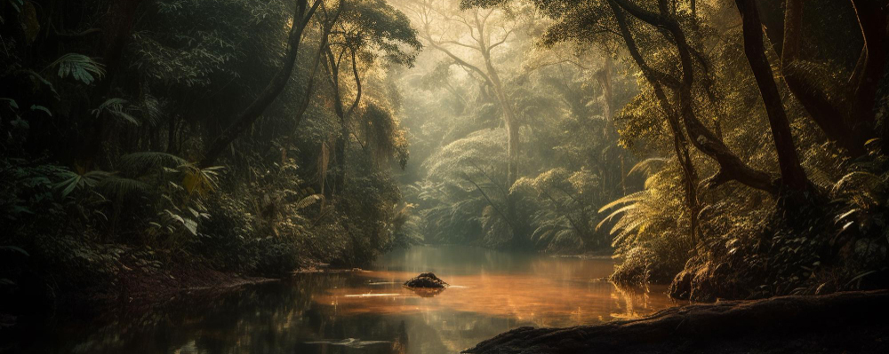

สายน้ำมรณะในป่าแอมะซอน พร้อมจะต้มทุกชีวิตทั้งเป็น
เผยเรื่องราวน่าสะพรึงของสายน้ำมรณะที่ทอดตัวยาวกว่า 6 กิโลเมตรกลางป่าแอมะซอน ประเทศเปรู ร้อนระอุ เดือดปุด ๆ พร้อมที่จะฆ่าทุกชีวิตที่บังเอิญพลัดตกลงไปในน้ำ
เว็บไซต์ Gizmodo นำเรื่องราวน่าทึ่งนี้มาฝากกันเมื่อวันที่ 17 กุมภาพันธ์ 2559 โดยบอกเล่าผ่านประสบการณ์ของ แอนเดรียส รูโซ นักธรณีวิทยาหนุ่มที่ออกเดินทางตามหาสายน้ำมรณะแห่งนี้ จนได้เห็นมันกับตาตัวเอง หลังจากเคยได้ยินแค่ในเรื่องเล่าจากคนรุ่นก่อนเท่านั้น
แอนเดรียส รูโซ ได้ยินเรื่องราวของสายน้ำสายนี้ครั้งแรกเมื่อตอนเด็ก ๆ จากคำบอกเล่าของปู่เขาเอง ซึ่งได้เล่าว่า ในยุคจักรวรรดิอินคาช่วงสุดท้าย มีนักผจญภัยกลุ่มหนึ่งได้เข้าไปในป่าแอมะซอนเพื่อค้นหาทอง แต่มีเพียงไม่กี่คนที่รอดชีวิตกลับมา และบอกเล่าว่าในป่าแอมะซอนนั้นเขาได้เผชิญกับฝันร้ายสุด ๆ ไม่ว่าจะเป็น น้ำที่เป็นพิษ งูกินคน และมีสายน้ำที่พร้อมจะต้มสุกทุกชีวิตทั้งเป็น
รูโซไม่ได้ให้ความสนใจอะไรมากจากคำบอกเล่าที่คล้ายจะเป็นตำนานนั้น กระทั่ง 12 ปีต่อมา เขาก็ได้ยินเรื่องนี้อีกครั้ง เมื่อน้าของเขาเล่าให้เขาฟังว่าเธอได้ไปเยือนไปเห็นสายน้ำอันเดือดระอุนี้มาแล้ว และนั่นทำให้เขาประหลาดใจอย่างมาก ในฐานะนักศึกษาธรณีวิทยาในตอนนั้น เขากระหายใคร่รู้เหลือเกินว่าสายน้ำที่น้ำเดือดปุด ๆ อย่างที่ใครเล่ามานั้นมีอยู่จริงหรือ มันไม่น่าจะเป็นไปได้เลย จึงลองถามจากเพื่อนในวงการ บริษัทเหมืองและก๊าซ ปรากฏว่าคำตอบออกมาเป็นเอกฉันท์ว่า "ไม่มีหรอก" เพราะว่าบริเวณดังกล่าวนั้นอยู่ไกลจากเขตภูเขาไฟมาก
แต่เมื่อน้าของเขายืนยันว่ามีจริง รูโซก็ตัดสินใจออกเดินทางไปยังป่าแอมะซอนเพื่อหาคำตอบด้วยตัวเองในปี 2554 โดยมีน้าเป็นไกด์นำทางไป จนในที่สุดรูโซได้พบว่าสายน้ำที่เดือดระอุนั้นมีอยู่จริงบนโลกใบนี้
สายน้ำดังกล่าวเป็นสายน้ำที่ทอดตัวยาวกว่า 6 กิโลเมตรกลางป่าแอมะซอน จุดที่กว้างที่สุดกว้างประมาณ 25 เมตร และลึกที่สุดประมาณ 6 เมตร น้ำร้อนพอที่จะใช้ชงชา แต่ละจุดมีอุณหภูมิแตกต่างกันไป บางจุดร้อนมาก บางจุดร้อนน้อย บางจุดแตะระดับ 98 องศาเซลเซียส รูโซเล่าว่าถ้าหากเขาเอามือแตะลงไปในน้ำ มันสามารถลวกเขาได้ในระดับ 3 ภายในเวลาเพียงครึ่งวินาที ชั่วพริบตาเดียวเท่านั้น หากตกลงไปในน้ำก็ยิ่งไม่ต้องพูดถึง มันสามารถฆ่าเขาได้ตายได้เลย
"ผมเคยเห็นสัตว์หลายตัวตกลงไปในน้ำ สิ่งที่เกิดขึ้นนั้นทำให้ผมช็อกมาก พวกมันถูกต้มสุกทันที ทุกอย่างเกิดขึ้นรวดเร็วมาก" รูโซ กล่าว
สำหรับสาเหตุของสายน้ำร้อนระอุแห่งนี้ แหล่งข่าวเผยว่าจริง ๆ แล้วก็เหมือนบ่อน้ำร้อนทั่วไป เกิดจากน้ำพุร้อนพุ่งขึ้นมาตามช่องเปิดใต้ดิน เมื่อฝนตกลงมา น้ำฝนก็ไหลลงเป็นหนึ่งเดียวกับสายน้ำและถูกต้มจนร้อนระอุเช่นกัน ทำให้เกิดเป็นสายน้ำร้อนจัดดังกล่าว